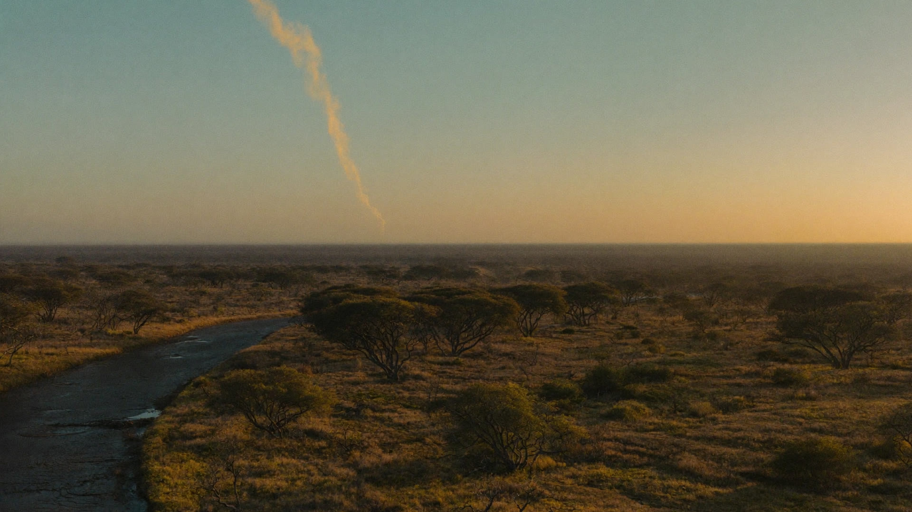

Ground Too Big And Too Remote To Watch From The Ground.
Reserves are measured in hundreds of thousands of hectares, most of it hours from the nearest road. Satellite thermal monitoring is the only method that covers all of it at once.
A conservancy cannot post a spotter on every ridge, and the fires that matter often start far from any road, at night, in country a vehicle cannot reach quickly. Thermal detection reads heat rather than light, so darkness makes no difference to it, and it watches the whole property rather than the few places you could afford to instrument.
A burn you planned and a burn you did not
Fire on a reserve is not only a threat. It is a management tool, applied on a block rotation to hold back bush encroachment, to clear moribund grass and to keep the veld in the state the ecology needs. Any monitoring that treats every heat signature as an emergency is useless to you by the second week of the burning programme.
The useful distinction is not made by the satellite. It is made by you, because you already know which blocks are scheduled and when the teams are out. What the monitoring adds is everything outside that: the signature in a block nobody is working, at an hour nobody is burning, on the boundary where somebody else's fire is arriving.
The terrain decides how long you have
On a reserve the distance between knowing and arriving is the whole problem. A fire reported by a guest or a neighbour has usually been burning for some time before anyone saw it, and the drive to the nearest access point can take what is left of the afternoon. Detection that starts from a heat signature and a coordinate, rather than from a description, gives the mobilisation its time back.
That is also what makes fire spread modelling worth having here rather than in tighter country. When the approach takes hours, the question is not where the fire is now, it is where the front will be when your team finally reaches the block.

Most of a reserve is further from a road than it is from the nearest fire. The satellite has the same view of all of it.
Fire management needs a pattern, not just an alarm
Reserves manage fire, they do not simply fight it. Knowing where fires keep starting, how they run under different conditions and which blocks burned in which season is what turns an annual emergency into a fire management plan. That requires a consistent record across seasons, gathered the same way every time.
A record built by the same method every year is also the one you can defend. Season on season comparison only means something if the earlier seasons were measured the way this one was, and that is difficult to achieve from incident reports written by whoever was on duty.
The fence line is not the edge of the problem
Conservation landscapes rarely stop at a boundary. A reserve sits against community land, commercial farms, a neighbouring property under different management, sometimes another country. Fire arrives from all of them and leaves across all of them, and the relationship with those neighbours is usually more delicate than the fire itself.
Because the monitoring comes from orbit rather than from installed equipment, extending it across a boundary is a matter of drawing a different shape on the map, not of negotiating access to put hardware on somebody else's ground. Where a neighbour is a commercial plantation or the surrounding district is coordinated by a Fire Protection Association, the same picture can be the one everybody works from.
What is at risk is not only the veld
A reserve carries assets that do not appear on a fuel map. Lodges and camps with guests in them. Staff villages. Fence lines that take weeks to repair and that matter to the neighbours the moment they are down. Infrastructure that is expensive to reach, never mind to rebuild.
Those are the things that turn a management fire into an incident, and they are the reason the first hour is worth buying even on ground where fire is a normal part of the year.
STRAIGHT ANSWERS
What Reserve Managers Ask Us
Can it tell our prescribed burns apart from a wildfire?
Not on its own. The satellite reports heat. You already know which blocks are scheduled and when your teams are out, so the separation is made against your own burn plan. What the monitoring is for is everything outside it.
Half the reserve has no road access. What does early detection actually buy us?
Time to mobilise. On ground where the approach takes hours, knowing at ignition rather than when someone sees the smoke is often the entire difference between meeting the fire and following it.
Can we monitor across a boundary or into neighbouring land?
Yes. The monitored area is a shape you define, not a property register, so it can follow a landscape, a catchment or a transfrontier area rather than a title deed.
Can we get the fire history for our management plan?
Yes. Burn scar and severity mapping accumulates season on season, gathered the same way each time, which is what makes the comparison between years worth anything.
Will we be alerted for every small burn?
You control the monitored area, and detections carry a confidence level, so the alerting can be set to what your team will actually act on rather than to everything warm.
Does it work at night?
Yes. It reads heat, not light. Night is when a great deal of the reserve is least observed and it makes no difference to the detection.
BOOK A LIVE DEMO
See Your Own Ground.
Send us the ground you are responsible for. We will run the platform over your actual coordinates and show you what the last fire season looked like from orbit.